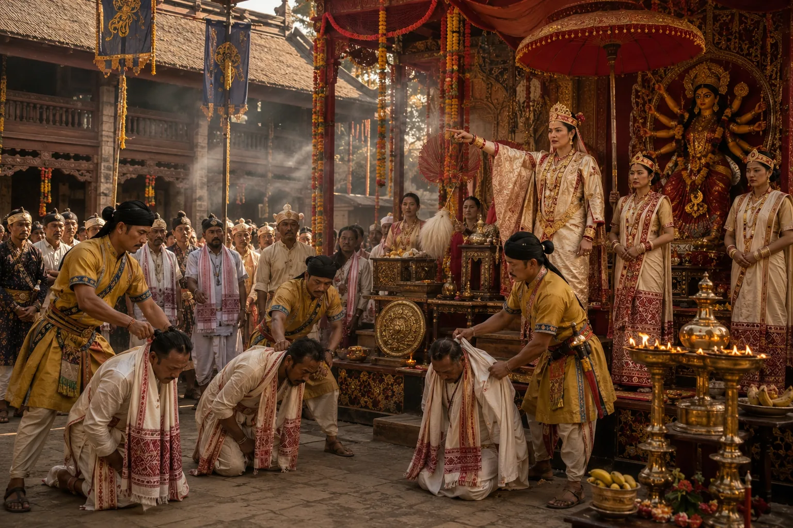

Queen Phuleswari's Persecution of Moamoria Vaishnavas
c. 1730 · The Tungkhungia kings

Queen Phuleswari aggressively enforces Shakta worship, compelling Moamoria Vaishnavite Mahantas to smear sacrificial animal blood on their foreheads, igniting decades of bitter hatred.
Sources have not yet been catalogued for this record.
People: Phuleswari (Pramatheswari), Siva Singha (Sutanphaa)
Open this scene in the interactive archive · Follow this event on MAP